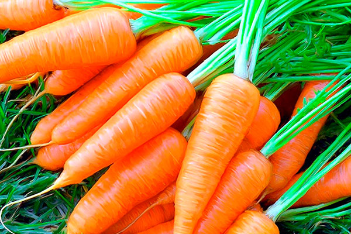

Каталог
ВЕСНА НА МОРКОВНОЙ ГРЯДКЕ

Морковь любима всеми россиянами. Да и как без неё обойтись при готовке овощного супа, овощного рагу, при квашении капусты, при консервировании салатов? Нашу оранжевую любимицу невозможно заменить никаким другим овощем.
1. Какая грядка подходит для выращивания моркови?
Моркови подходит не любая грядка, а только лишь хорошо освещённая солнцем и к тому же продуваемая ветерком. В тени, возле кустов и деревьев она накапливает меньше каротина, ради которого мы её и выращиваем. К тому же на такой грядке раздолье для морковной мухи.
2. Какая почва подходит для её выращивания?
Для выращивания моркови подходит только мелкокомковатая почва, т.е. лёгкая и средняя суглинистая, супесчаная, торфяная, окультуренная дерново-подзолистая. На каменистых, тяжёлых глинистых и плотных почвах морковь будет уродливой и не сочной.
3. Надо ли копать грядку под морковь?
Грядку под морковь надо копать осенью, желательно без оборота пласта. Поскольку длина корнеплодов у многих сортов достигает 30 см, то копать надо на полный штык лопаты.
Весной почву перекапывать не следует. Будет достаточно разбить крупные комки мотыгой, а затем тщательно разровнять граблями, предварительно внеся на 1 кв. м по 1 чайной ложке мочевины. За неделю до посева семян грядку обильно поливают тёплой водой. Затем её накрывают полиэтиленовой плёнкой для предотвращения высыхания и лучшего прогревания.
4. Надо ли под морковь вносить свежий навоз?
Свежий навоз надо вносить на эту грядку не под морковь, а под ту культуру, которая росла на этой грядке до неё. Это надо делать в связи с тем, что при внесении свежего навоза под морковь, особенно весной, морковь ветвится, и вкус её ухудшается, к тому же она будет хуже храниться зимой.
На бедной песчаной почве для повышения её плодородия можно внести перележавшие опилки или свежие, но смоченные мочевиной (1 ст. ложка на ведро воды), на торфянистой – для повышения теплоёмкости – крупнозернистый речной песок.
5. Можно ли вносить навоз и известь одновременно?
Вносить одновременно навоз и известь не следует, поскольку при совместном внесении они образуют нерастворимые соединения, которые растениями не усваиваются.
6. Можно ли сеять морковь сухими семенами?
Всходы моркови приходится долго ждать. Всё дело в эфирных маслах, которые находятся в семенах и тормозят их прорастание. Без намачивания и проращивания всходы появляются через 15-21 день. А если погода стоит сухая и холодная, то ждать их появления приходится ещё дольше.
Именно поэтому семена моркови надо готовить к посеву. Самый простой способ – это их замачивание в тёплой воде в течение суток. Во время замачивания воду меняют 2-3 раза. Набухшие семена высыпают на газетную бумагу, подсушивают до сыпучести, перемешивая их на бумаге, и сразу высевают.
А можно подготовку семян продолжить и после намачивания – дополнительно прорастить, рассыпав по влажной ткани и накрыв сверху тоже влажной тканью. При этом следят, чтобы ткань не пересыхала. Поэтому тарелку с семенами лучше поставить в полиэтиленовый пакет. При появлении единичных проростков (около пяти процентов) семена подсушивают на бумаге и высевают.
Очень эффективна термическая обработка семян. Для этого их в марлевом мешочке на 20 минут погружают в горячую воду, нагретую до 50-52 градусов. Затем их быстро остужают холодной водой и подсушивают до сыпучести. Этот способ позволяет эффективно бороться с внутренней инфекцией, но при этом температуру и продолжительность процедуры надо выдерживать очень точно.
Но самой эффективной и не очень трудоёмкой схемой подготовки к посеву семян моркови является их барботирование в течение 24 часов в насыщенной кислородом воде, а затем протравливание семян в 2%-ном растворе марганцовки в течение 20 минут.
Очень эффективно обрабатывать семена одним из готовых стимуляторов роста (на 1 литр воды): «Планта» – 1 чайная ложка; «Гуматы» натрия или калия – 0,5 чайной ложки; «Фитоспорин» – 1 чайная ложка и т.д..
А наши прадеды делали всё это намного проще. Они насыпали семена в тканевый мешочек и за две недели до посева закапывали в землю. За день до посева их доставали из земли, слегка подсушивали и сеяли.
7. Можно ли сеять замоченные семена в сухую почву?
Сухие семена можно сеять в любую почву, в т.ч. и в сухую, а замоченные или пророщенные – только во влажную. Если почва до посева подсохла, то бороздки надо полить из лейки тёплой водой, иначе семена в сухой почве просто погибнут. Замоченные семена во влажной почве взойдут через 9-10 дней.
8. Когда лучше сеять морковь?
Ранние сорта моркови лучше высевать с 25 апреля до 1 мая, а среднеспелые – с 1 мая по 10 мая. Более ранний посев может привести к сильному растрескиванию моркови осенью. А если вы с посевом опаздываете, то семена попадут в сухую почву, дадут слабые всходы и такой же урожай.
9. Как сделать в почве бороздки для посева?
Перед посевом семян на грядке нарезают 3-4 борозды. Первую борозду надо делать, отступая от края грядки около 10 см. Затем нарезают другие борозды с расстоянием между ними 15-16 см для ранних сортов и до 20 см для позднеспелых сортов.
Делать лопатой в почве бороздки для посева семян нельзя. Такие бороздки будут иметь разную глубину, поэтому семена будут всходить неравномерно, что у многих молодых растений сразу вызовет отставание в росте. Бороздки лучше делать краем специальной дощечки, вдавливая её в выровненную на грядке почву. При таком посеве семена окажутся на одной глубине и взойдут одновременно...